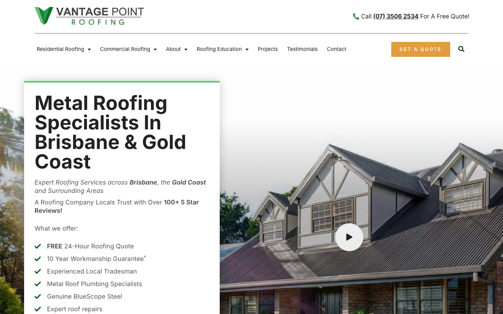

68/100 · low_priority · 行业：roofing · 地区：Brisbane · Google 评价：4.6★ （0 条）
投入分级： C 批量轻触 — 模板邮件 + 报告
PDF 链接，无主动跟进
触发依据： - C · low_priority · audit 68 · 0 评论 4.6★ (未达 B 标准)
下一步行动： 标准模板邮件 + master.md PDF 链接，无主动跟进。等客户回复触发后再投入。
线索来源 · 联系开场可用: - 来源:
Google Maps (gosom 抓取) - 搜索关键词:
roofing in brisbane - 首次发现: 2026-05-14
- Batch:
pipe-roofing-brisbane-202605142119
审计结论： audit_score=68 → low_priority · weakest: gbp 20, visual 50
independent_https_site
慢速 4G 加载实景视频（1.6 Mbps · 150ms 延迟 · 4× CPU 节流，模拟真实手机访客的体验）：
The site looks like a legitimate local roofer, but the first screen makes it harder than necessary for mobile and desktop visitors to call or request a quote.
新鲜度 6/10 · 信任度 7/10 ·
转化准备度 5/10 · 设计年代
slightly_outdated
值得保留的优点： - The logo is clear and professional, and the green brand color fits the roofing/trade category. - The site shows a phone number on desktop and references 100+ 5-star reviews, which are useful trust signals. - The hero uses a real roof/project image rather than a generic abstract background.
技术事实
On the mobile screenshot, the top bar shows the logo, a phone icon, and a green hamburger menu, but there is no visible ‘Get a Quote’ button or phone number in the first screen.
普通话翻译
手机页面顶部只有电话图标，没有清楚写出“立即致电”或“获取报价”。
对客户的影响
很多本地客户是在手机上从 Google 商家资料点进来的，通常几秒内就决定要不要联系。如果看不到明确按钮，客户可能直接返回去点下一家屋顶公司。
正确长啥样
Mobile header with a clearly labelled ‘Call’ or ‘Get Quote’ button visible without scrolling, using a tap-sized button of at least 44px height and a phone number or quote action in plain text.
Redesign 怎么改
Replace the icon-only mobile contact control with a sticky mobile action bar or header buttons: ‘Call Now’ and ‘Get Quote’, keeping the hamburger as a secondary control.
技术事实
0 reviews
普通话翻译
你的 Google 评价数量低于同行平均水平。
对客户的影响
本地搜索排名信号之一就是评价数量；不光是分数，连”有多少条”都算。短期可以做的：每个完工的客户群发一条「点评一下吧」的 SMS。
技术事实
title=‘# Metal Roofing Specialists in Brisbane & Gold Coast’ contains-name=false contains-niche=true
普通话翻译
你网站的浏览器标签 title 没把业务名字 + 服务关键词写清楚（比如该写「Vantage Point Roofing - roofing Brisbane」，但目前是泛泛一句）。
对客户的影响
Google 搜索结果里展示的就是这个 title。写不清楚 = 排名靠后 + 即使排上来客户也不知道是不是匹配的服务。SEO 最便宜的修复，但很多本地企业完全没做。
技术事实
On desktop, the orange ‘GET A QUOTE’ button sits in the navigation bar on the far right, while the main headline and service benefits are inside a large white hero panel on the left with no quote button inside that panel.
普通话翻译
桌面版的报价按钮离主标题太远，客户看完介绍后没有马上看到下一步。
对客户的影响
客户越需要寻找按钮，越容易分心或离开。服务类网站通常要在首屏直接给出联系电话和报价入口，否则会流失准备询价的人。
正确长啥样
Hero section with the headline, one short trust line, and a primary ‘Get a Free Roofing Quote’ button directly beneath the offer, plus a secondary ‘Call 07 3506 2534’ action.
Redesign 怎么改
Add a high-contrast quote button and phone CTA inside the hero text block, directly below the trust statement and before the service list.
技术事实
The mobile screenshot shows a large centered headline, two lines of italic subtext, a review sentence, and the beginning of a bullet list before any image, form, quote button, or phone number text appears.
普通话翻译
手机首屏文字太多，客户要先读很多内容，才可能找到下一步。
对客户的影响
本地搜索客户经常边比较边快速浏览，首屏如果不能马上说明“可信”和“怎么联系”，询盘会被更直接的网站抢走。
正确长啥样
Mobile hero with a shorter headline, one trust line such as ‘100+ 5-star reviews’, and two clear action buttons above the fold, followed by the service list lower down.
Redesign 怎么改
Condense the mobile hero copy to headline plus one supporting line, move the benefits list below the first CTA row, and keep ‘Call Now’ and ‘Get Free Quote’ visible before scrolling.
PSI 给的是宏观分数，下面是具体可改的两块：图片格式与 tracker 脚本。
总评： 部分优化 — 还有空间
具体问题： - [minor] 4 张图仍是 JPG/PNG，建议转 WebP - [minor] 33/46 张图无响应式 srcset — 移动端浪费带宽 - [minor] 36/46 张图未 lazy load — 首屏外的图阻塞主线程
已识别的 tracker：
| 工具 | 类型 | 请求数 | 字节 |
|---|---|---|---|
| Google Tag Manager | analytics | 2 | 293.2 KB |
| Meta Pixel | ad_pixel | 2 | 97.3 KB |
| Google Analytics | analytics | 3 | 20.3 KB |
| Microsoft Bing UET | ad_pixel | 3 | 15.0 KB |
观察： 10 个 tracker 合计加载了 426 KB —— 这些都是阻塞主线程的脚本，是性能 + 隐私双角度的销售切入点。redesign 时可以建议清理不再使用的 tracker。
客户最常担心的问题：「我重做网站，会不会丢掉 Google 排名？」这一段直接回答。
https://vantagepointroofing.com.au/sitemap_index.xml页面分类：
| 类型 | 数量 |
|---|---|
| 服务详情页 | 77 |
| service_area_page | 45 |
| 顶层页面 | 21 |
| area_page | 11 |
| 关于 / 团队 | 2 |
| Blog 文章 | 1 |
| 首页 | 1 |
| 联系 / 报价 | 1 |
| 客户评价 | 1 |
| 法律 / 隐私 | 1 |
Sitemap lastmod 跨度： 最旧 2016-04-07 → 最新 2026-05-11
Redirect 计划承诺： redesign 上线时我们会附一份 50 条 1:1 redirect 表（旧 URL → 新 URL），保证 Google 已经索引的页面权重无损迁移。已经在 Google 第一二页的关键词不会丢。
长尾覆盖： 强 — 已有 5+ 服务×区域页，长尾流量基础在
现有服务页样本：
/signs-its-time-to-replace-your-roof/ ·
/limited-offer-50-off-gutter-guard/ ·
/why-metal-roofs-leak-less-than-tile-roofs/ ·
/metal-roof-leaks-causes-quick-fixes/ ·
/what-to-look-for-in-the-roof-when-buying-a-home/
现有服务×区域页样本：
/what-are-the-benefits-of-metal-roof-replacement/ ·
/lifespan-of-different-roof-types/ ·
/whats-in-a-roof-replacement-quote/ ·
/benefits-of-skylights-a-round-up-of-the-facts-bonus-case-study/
· /8-points-of-metal-roofing-maintenance/
客户能不能 方便地 把信息留下来 =
直接的转化路径。这一段审视所有 <form> 元素的可用性 +
防 spam 配置。
未检测到任何 anti-spam 措施（reCAPTCHA / hCaptcha / Turnstile / honeypot 都没有）— 表单极容易被自动机器人灌爆，垃圾询盘会让客户对真实询盘麻木。redesign 时建议加 Cloudflare Turnstile（不可见，免费）。
Audit 总结：
reject）strong (SPF + DKIM
+ DMARC 齐全)从网站源码识别出来的工具，能帮我们判断这位客户的数字成熟度。
数字成熟度打分： 4 / 6 （高 — 客户懂数字营销，redesign 谈预算时不必从零教育）
客户可能有数月 / 数年的历史数据 + 广告投放受众 sit 在这些 ID 上面。重做时必须用同一套 ID 重新接进新网站，否则等于清零所有累积。
我们 redesign 交付清单会把这些列为「必须 setup 项」。
关键发现：客户网站还装着 Universal Analytics，这套工具 Google 已于 2023 年 7 月停止收集数据。也就是说，他们至少 2 年没有看过任何真实的网站访客数据。这是销售切入的强角度。
本地服务的客户在掏钱之前会查这些凭证。缺失 = 客户跳到下一家。
信任分： 50/100
客户网站缺少 2 个法律 / 行业要求的信任凭证：ABN、工伤 / WHS 合规。QLD 屋顶服务由 QBCC 监管，客户在花钱前会查这些；缺失等于直接给同行让单。
GEO = Generative Engine Optimization。ChatGPT、Perplexity、Google AI Overviews 这些 AI 搜索产品不像传统搜索引擎那样按”关键词排名”工作，它们直接抓取结构化数据并把答案合成给用户。如果你的网站在 AI 抓取这一块做得不到位，等于在生成式搜索时代隐身。
AI 可发现性总分： 65 / 100 — AI agent 抓取部分支持，但关键 schema / 凭证 / FAQ 缺失
llms_txt_present — llms.txt found (162997
bytes)localbusiness_schema — LocalBusiness JSON-LD
presentservice_schema — Service JSON-LD presentsemantic_landmarks — 5 semantic landmarks
present: <nav, <header, <footer, <article, <sectioneeat_business_credentials — 2/4 credentials in
copy: license/QBCC, insuranceeeat_warranty_trust — warranty/guarantee
mentionedjsonld_at_least_one — 9 JSON-LD block(s)
detected on pageai_bot_robots_policy (5 分) — robots.txt has no
explicit policy for AI crawlers (GPTBot/ClaudeBot/etc)faqpage_schema (10 分) — no FAQPage JSON-LD
(loses AI Overview / featured snippet eligibility)aggregaterating_schema (5 分) — no
AggregateRating JSON-LD (★ rating not shown in search snippets)breadcrumb_schema (5 分) — no BreadcrumbList
JSON-LDfaq_qa_pattern (10 分) — 1 question-style
heading(s) found (Q&A format helps AI extraction)销售切入： 「ChatGPT 现在每月 30 亿次搜索，本地服务用户问『Brisbane 哪家屋顶公司靠谱』，AI 回答时只引用结构化数据完整的网站。你目前在这个新阵地的得分是 65/100。」
注：这一段只给运营内部看，不进入客户报告。 用来判断这个 lead 是不是匹配我们「小网站 / 多批量 / 快上线」的产品定位。
mid —
中型客户，可接但价格要往上提（基础包 + 配置项）报价以上方 建议报价 为准（来自 entity.grade.recommended_pricing / PRODUCT_TIER_TABLE）。本段只用来判断 lead 是否匹配产品定位，不竞争报价。
触发依据： - 网站页面数 161（≥100，中等复杂度） - 已部署 5 个分析 / pixel 工具（高数字成熟度） - 引用 5 个社交平台（多渠道运营）
-2026-05-11-v1codex_cliGoogle Places · most_relevant (max 5)